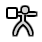

物体模式¶
模式选择菜单。
Modes are an object-oriented feature, which means that the available modes vary depending on the selected active object's type -- most of them only enable the default Object Mode (like cameras, lights, etc.).
Each mode is designed to edit an aspect of the selected object. See Tab. Blender的模式 below for details.
You set the current mode in the Mode selector of 3D View header (see Fig. 模式选择菜单。).
Modes can affect many things in Blender:
- 它们会修改面板和/或某些属性编辑器选项卡中可用的控件。
- They can modify the behavior of the whole editor, like e.g. the UV Editor and 3D View.
- They can modify the available header tools (menus and/or menu entries, as well as other controls...). For example, in the 3D Viewport, the Object menu in Object Mode changes to a Mesh menu in Edit Mode (with an active mesh object!), and a Paint menu in Vertex Paint Mode...
- They can modify the available shortcuts.
Object Mode List¶
| 图标 | 名称 | 技术细节 |
|---|---|---|
| Object Mode | 默认模式,，适用于所有的物体类型，专用于编辑 物体 数据块(比如位置/旋转/大小)。 | |
| 编辑模式 | A mode available for all renderable object types, as it is dedicated to their "shape" Object Data data-block editing (e.g. vertices/edges/faces for meshes, control points for curves/surfaces, strokes/points for Grease Pencil, etc.). | |
| 雕刻模式 | 仅适用于网格，用于启用Blender的3D网格雕刻工具。 | |
| Vertex Paint Mode | 仅适用于网格，用于网格顶点着色 (即“绘制”它们)。 | |
| Weight Paint Mode | 仅适用于网格，专用于编辑顶点组权重。 | |
| Texture Paint Mode | 仅适用于网格，用于直接在3D视图中模型上绘制纹理。 | |
| 粒子编辑模式 | 仅适用于网格，用于粒子系统, 与可编辑系统(毛发系统)。 | |

|
Pose Mode | 仅适用于骨架，用于编辑骨架姿势。 |
| Draw Mode | A Grease Pencil only mode, dedicated to create Grease Pencil strokes. |
Note
游标在 绘制与雕刻模式 会变成一个笔刷。
We will not go into any more detail on mode usages here, because they are dealed with in their own sections.
Hint
如果在读这本手册时，提到的一些按钮和菜单选项没有出现在屏幕上, 可能是因为不在合适的模式下，该选项无效。
Multi-Object Modes¶
Edit and Pose mode support multiple objects at once.
This is convenient if you want to perform the same edits on multiple objects or want to animate multiple characters at once.
To use edit multiple objects at once, simply select multiple objects and enter the mode.
The Outliner can also be used to add/remove objects while you are in a mode, by setting or clearing the mode from the context menu, or Shift-LMB clicking on the objects data icon.
Only the active object will be used to display properties such as shape keys, UV layers, etc.
Selecting any element from an object will set this as the active object.
There are limits to the kinds of operations that can run on multiple objects.
You can't for example create an edge that has vertices from different objects.